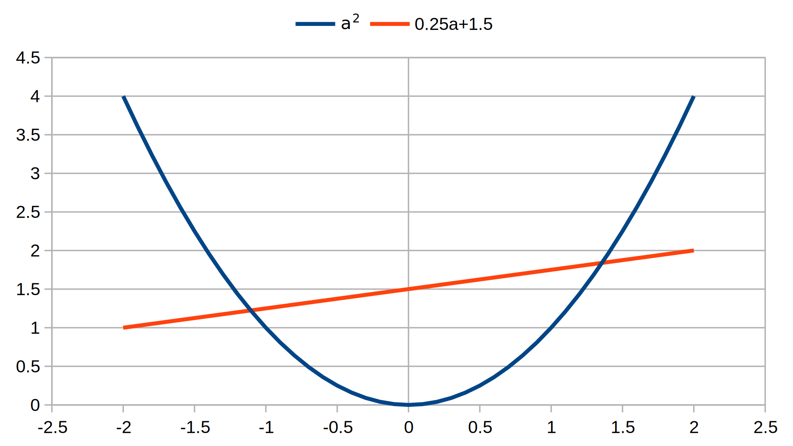
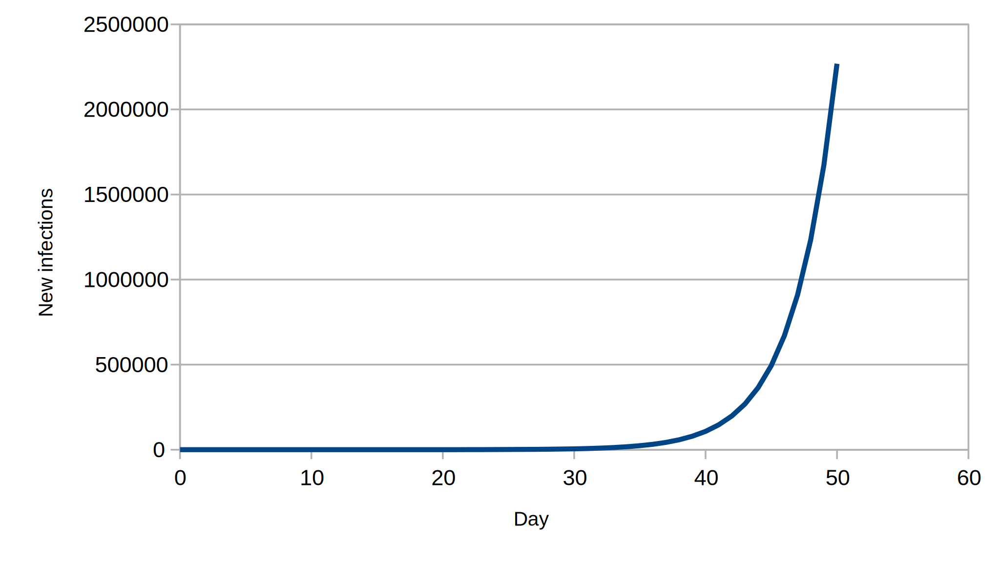
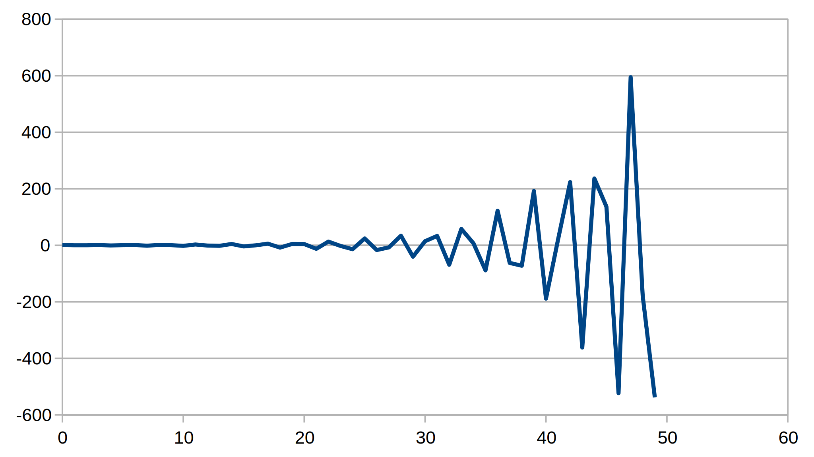

Infection delays
In the current covid-19 pandemic, people are interested in projecting forward in time to assess the efficacy of various techniques to control, or even better eliminate, the infection. The simplest models tend to be dominated by exponential behaviour, where the infected population tomorrow is related to today's infection by (roughly) a constant factor. If the factor is greater than 1, the infection grows; less than 1, the infection is fading, and happiness breaks out across the land. We come out of our prison blocks, blinking and shading our eyes from the sun.
Of course, the infection numbers tomorrow aren't simply related to what is happening today: in the case of covid-19 the infection takes up to two weeks to manifest, if at all in some cases. How come a simple constant factor works?
A reasonably simple model for infection delay (i.e. what has crossed what passes for my mind) would have today's newly infected population to be a function of the newly infected populations on previous days. To make life extra simple, we also use a linear function — a sum of the previous populations multiplied by various constant factors:
\[I_{0} = g_{1}I_{- 1} + g_{2}I_{- 2} + g_{3}I_{- 3} + \ldots\]
Using fancy maths notation, with the Greek capital sigma character (Σ) indicating a sum between limits, with D being the length of time the infection lasts in the average person (or at least stops creating new infections):
\[I_{0} = \sum\limits_{{}_{d = 1}}^{{}_{D}}g_{d}I_{- d}\]
Tomorrow's new infections would then be expected to be:
\[I_{1} = g_{1}I_{0} + g_{2}I_{- 1} + g_{3}I_{- 2} + \ldots = \sum\limits_{{}_{d = 1}}^{{}_{D}}g_{d}I_{- d + 1}\]
And on day n :
\[I_{n} = g_{1}I_{n - 1} + g_{2}I_{n - 2} + g_{3}I_{n - 3} + \ldots = \sum\limits_{{}_{d = 1}}^{{}_{D}}g_{d}I_{n - d}\]
There are known to be a number of (characteristic) solutions of these equations that have a simple power form:
\[I_{n} = a^{n}\]
This only works for specific values of a . To find these values we pop the proposed solution into one of the equations:
\[a^{n} = g_{1}a^{n - 1} + g_{2}a^{n - 2} + g_{3}a^{n - 3} + \ldots + g_{D}a^{n - D}\]
If we divide through by \(a^{n - D}\):
\[a^{D} = g_{1}a^{D - 1} + g_{2}a^{D - 2} + g_{3}a^{D - 3} + \ldots + g_{D}\]
This is a D -order polynomial. Note that n has dropped out, since it is not really relevant (and shouldn't be, that's the point) to the value of a . In theory, this equation can have up to D solutions. Allowing complex number solutions, there are exactly D solutions, possibly including multiple roots.
Examples
Two-day infection
Let's imagine the simplest non-trivial example — a 2-day infection: you, M. Average, pick up a mild cold virus at the supermarket, go around for a couple of days unaware that you are sub-par, then sniffles strike and you stay home and hopefully beat off the virus in short order. On the first day after the supermarketing you infect 0.25 of a person (as M. Average); day two comes, and, with the virus settled in and happily reproducing wildly, you infect 1.5 people. This would give:
\[I_{n} = 0.25I_{n - 1} + 1.5I_{n - 2}\]
The characteristic polynomial is then a quadratic:
\[a^{2} = 0.25a + 1.5\]
This is satisfied by real a values of about 1.36 and –1.11 (more accurate values in spreadsheet):

Download: xlsx
Let's imagine the cold virus initially infected one person on day 0, “patient zero”. Before that the infection was at zero (it didn't exist). On day 1, there is a quarter (0.25) of a person newly infected. On day 2, the newly infected are 0.25×0.25+1.5×1, or approximately 1.56. And so on. I have put this into a spreadsheet, and used the graph features to produce the following images with new infections plotted on linear and logarithmic scales:

We note that the logarithmic image shows initial wobbling, but eventually tends to a straight line. In the spreadsheet there is an additional “Factor” column where I have taken the ratio of new infections for “today” and “yesterday”. I have created a graph of this too:

If you look at the values in the spreadsheet, the factor tends to 1.36 approximately. Assuming that you aren't a proverbial goldfish, you may remember above that one of the solutions of the characteristic equation was 1.36. This not an accident — the solution with the largest absolute value tends to dominate, given sufficient time (after about 20 days, in this case). So once the infection has set in, one can model the behavior as a simple exponential.
What does the other solution represent? We will show that it gives the wobbles in the initial stages of the infection. In fact we try a solution:
\[I_{n} = A\left( 1.36)^{n} + B\left( - 1.11)^{n} \right. \right.\]
On day 0, we have:
\[1 = A\left( 1.36)^{0} + B\left( - 1.11)^{0} = A + B \right. \right.\]
Day 1:
\[0.25 = A\left( 1.36)^{1} + B\left( - 1.11)^{1} = 1.36A - 1.11B \right. \right.\]
This is enough for us to solve for A and B , giving roughly 0.55 and 0.45, respectively. Since these are only accurate to two significant figures the deviation from the true solution is quite rapid:
| Day | New infections (In) | In prediction |
|---|---|---|
| 0 | 1 | 1 |
| 1 | 0.25 | 0.2485 |
| 2 | 1.5625 | 1.571725 |
| 3 | 0.765625 | 0.76806685 |
| 4 | 2.53515625 | 2.5646927725 |
| 5 | 1.7822265625 | 1.800646909885 |
| 6 | 4.248291015625 | 4.32182193683725 |
| 7 | 3.73541259765625 | 3.79871205937171 |
| 8 | 7.30628967285156 | 7.47390041069244 |
| 9 | 7.42969131469727 | 7.60301082750063 |
| 10 | 12.8168573379517 | 13.1833527668565 |
As the process repeats, the rounding errors become more and more severe. If one is minded, one can increase the precision of the arithmetic, and the solution of the sum of two powers multiplied by factors becomes exact in the limit of infinite precision. A better comparison is available in the spreadsheet.
With a more extended infection period, more solutions need to be added to give the initial wobbles. If there are D different roots of the characteristic equation, then you can again “solve” the progression with sums of powers that fits an initial infection pattern spread over D days. If some of the roots are multiple, the solution becomes more complicated, but not intractible. In real life, other factors come into play, such as the gathering of data being sporadic, hampered by political considerations, butt covering, and so on. One is then largely restricted to, hopefully intelligent, guesswork.
Being a bit bonkers, I decided to run the prediction backwards in time (I–n) on the spreadsheet with the related factor column gives the reduction factor going backwards in time (–n). We note that this tends to –1.11, the other solution of the characteristic polynomial. As far as it can (the solution is effectively zero at this point), it “dominates” the negative time behaviour:

Three-day infection
As the infection period extends, life gets more complicated since we don't have simple solutions like the quadratics we learned in school. For cubics and quartics (up to fourth power), there are non-obvious solutions, which seem to have been found more by luck than judgement during the Italian Renaissance, and kept secret for a time, giving advantage to the knowers in maths competitions. Quintics (fifth power) and beyond don't even have a general solution, as shown by Galois before dying in a duel. These equations can be treated numerically, which is how we will treat a three-day example, although in principle one could find a solution. I studied:
\[I_{n} = 0.25I_{n - 1} + 0.75I_{n - 2} + I_{n - 3}\]
giving a characteristic:
\[a^{3} = 0.25a^{2} + 0.75a + 1\]

As it happens, the real solution is about 1.35. There are also two complex solutions, roughly –0.55±0.66i. The absolute value of the complex solutions is about 0.86, less than the real solution. Having absolute values less than 1, means the complex solutions are damped, tending to zero. I initially tried working wholly on a spreadsheet, but in this case a python 3 script enabled me to match the sum of powers predicition to the recurrence calculation. The script references scipy/numpy modules that you might need to install using pip3 or whatever. The script is also adaptable to work out the characteristic solutions for longer infection periods. The output is a csv file with the brute force calculation and a “patient zero” fit to the characteristic solutions:

The backwards behaviour (retrodiction), also included, is even more bonkers since the two complex solutions play off each other, giving oscillations with a growing amplitude.

This is better understood by putting the various complex bits in polar form. The real characteristic solution is damped in the backward direction. A simple-minded yesterday/today ratio comparison is not much use for relating the behavior to these roots. In the context of infections, the negative time solution is of little practical interest, since it didn't exist before “patient zero”, who is assumed to come from nothing (or ex nihilo , as Boris Johnson would say).